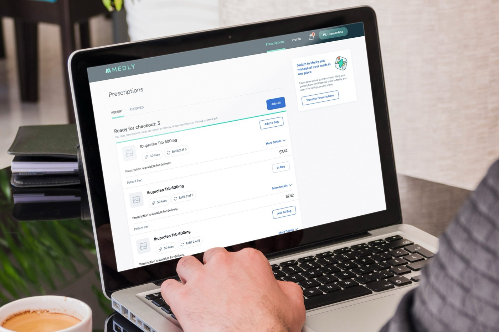
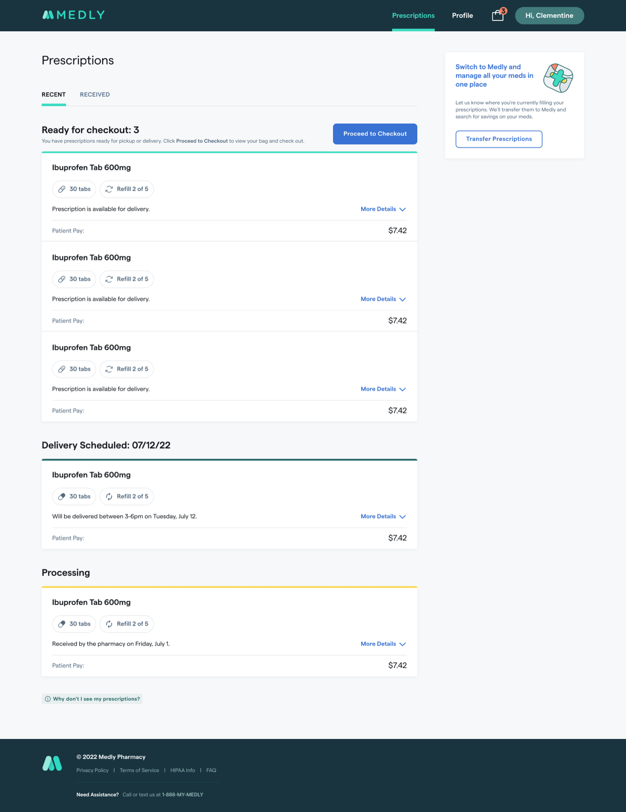
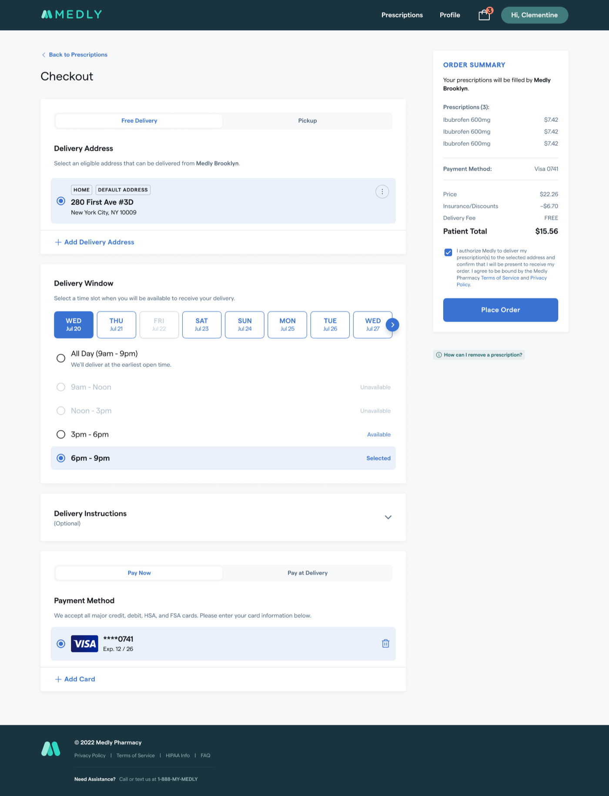
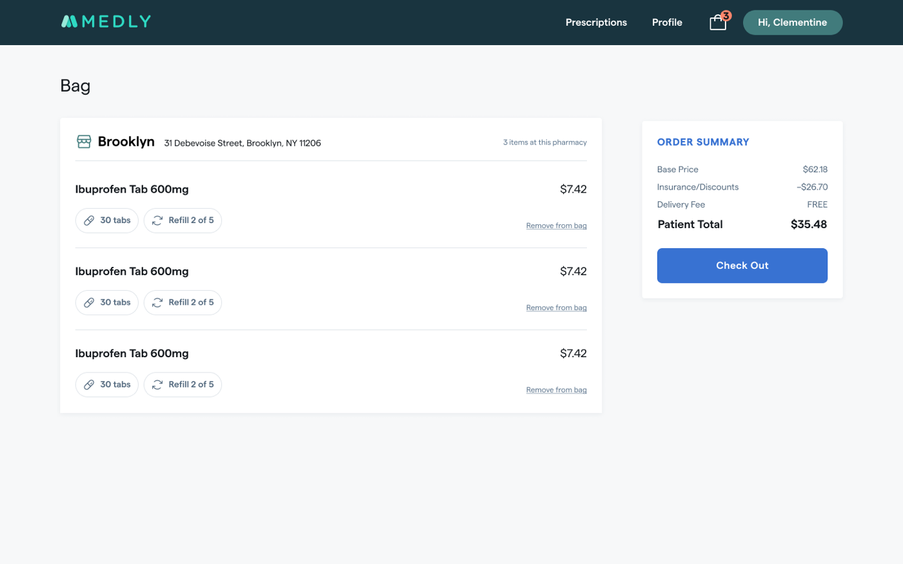
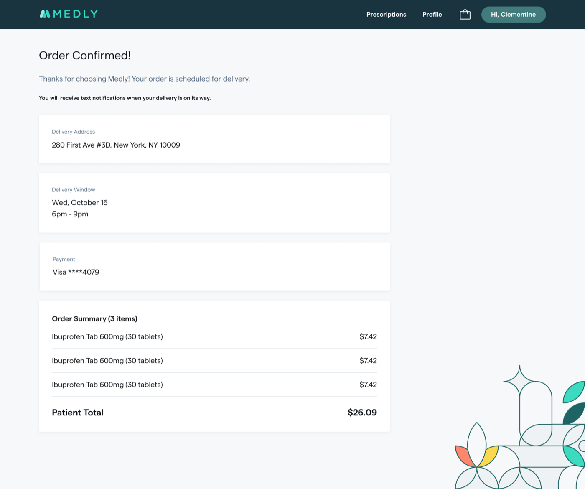

Prescription Checkout & Delivery

Medly is a digital pharmacy that delivers medications and manages prescriptions for patients who previously had to call in every order. I led design on a self-serve checkout that let patients see what was ready to fill, choose what to pay for, and schedule delivery — without an agent on the phone.
Objectives: let patients self-serve prescription selection and flexible delivery scheduling (with in-store pickup as an option), and free agent time for higher-value patient support.
The original plan linked checkout out to a separate, text-based mobile web app. Partway through, engineering discovered the two systems couldn't sync patient data — which would have forced patients to re-enter information they'd already given us. Rather than ship a frustrating handoff, we delayed public launch to build the full checkout experience natively, and phased lower-priority pieces for later.
I ran a competitive analysis of pharmacy checkout flows, extended the existing component library rather than building from scratch, and prototyped the flow for moderated usability interviews — recruiting real patients over Google Meet to walk through checking out live prescriptions.


Patients moved through the flow smoothly overall — “Good. Like checking out on Amazon.” and “Pretty straightforward and easy” were typical reactions. But two specific points of friction showed up consistently:


Many patients still preferred walking to their pharmacy in person — the new flow was additive to that relationship, not a replacement for it, and that nuance shaped how we talked about the feature internally.